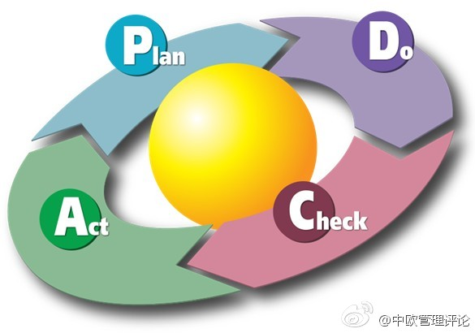
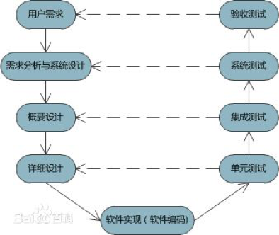
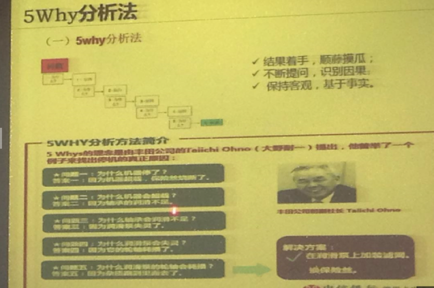

信息安全/
质量管理/
项目管理跨界修炼
主讲人：邵晓天
开讲啦，今天主讲老师是质量控制室的副经理邵晓天，他为我们带来了关于信息安全/质量管理/项目管理跨界修炼的课程。通过概念的引入，大家认识到信息安全的三原则CIA，即Confidentiality(保密性),Integrity(完整性),和Availability(可获得性)。而通过伪基站和“照片泄密”等具体的案例，大家了解到信息安全的重要性，不仅在于对客户信任的责任，还在于信息的价值。那卡中心是怎样做好信息安全工作的呢？邵老师讲到目前卡中心的三大认证：信息安全管理体系；PCIDSS（支付卡行业信息安全标准）；等级保护。然而老师也强调了：尽管体系建立好，信息安全的责任是在于每个人自身的意识和行为，对于银行从业者这是我们的基本准则。
紧接着老师带着大家深入了解软件测试，包括测试类别、通用框架、技能要求以及真实的案例讨论。讨论案例时大家是最积极的，这是知识应用到实际情况再反过来充盈已有知识体系的过程。所以在后来的项目管理部分讨论唐僧团队和婚礼WBS时大家嗨翻了。不过讲起理论来还是头头是道的：项目管理是一门科学也是一门艺术。首先要做好范围的界定、再一个是分解步骤、成本与资源计划、还有风险应对措施。质量管理的5why分析法是层层剖开问题找到原因和解决方法,P(Plan)C(Check)D(Do)A(Act)概括了整体流程，项目管理三句话等等……
课程结束后老师还语重心长地给大家讲测试职业道路的发展，并提升到所有it岗位的高度，即两条腿走路——技术之路永无止境；个人行为和职业素养。
最后必须提到的是，云之颠队的课前破冰游戏不仅让大家打起精神，更使得气氛活跃，每时每刻都能感受到团队协作的力量。最逗的是传纸条游戏，网上邻居队虽然最慢但却是他们组给大家带来了最多的欢乐，此处应有笑声~请看图/视频
以下是今天课程各模块内容的ORID ^^
一 信息安全
O(实践)：质量控制室的邵晓天老师向我们讲授了平衡之舞——项目管理。项目就是为实现某一特定目标而所做的一次性努力。项目管理就是用合适的人、合适的时间、合适的成本、做合适的事。西游记中的师徒五人西天取经就是一个项目。其中项目管理就是每人各司其职，不仅做好自己的本职工作，也要维系自己的团队协作共同完成任务。而我们的卡中心的目标是全面过程整合：建设全生命周期项目管理体系，即PDCA模型(Plan,Do,Check和Act)。包括工作范围、质量、成本、时间、人、需求各方面。
R（感受）：通过“信息安全”的学习，主要有两个收获：1、工作上对于自身的信息需要严谨对待，任何一点空隙都将有可能被不法分子有机可乘，所以要分外小心。2、由于用户在使用产品的过程中，并不会像我们开发人员那样时刻提防，所以在技术实现的过程中，更多的应该考虑到用户使用起来方便又相对安全作为出发点。
I（意义）：信息安全的意义：1、为用户带来保障，让用户放心使用我们的产品。2、为公司提供保障，维护了我们自身的利益。3、从正面减少了犯罪分子的不法行为，减少社会动荡。
D（行动）：通过整个学习过程，明白了信息安全的重要性，了解到了信息安全在我们生活的方方面面，对事物思考得越全面，就越能把控好整个格局。这是一种意识，将在日后的工作中时刻谨记，并为他人的安全，献出我们的一份力。
三 平衡之舞——项目管理之道
O（实践）：今天的课程讲到了信息安全的问题，老师从当年的“照片泄密案“说起信息安全的重要性。从而引出评定信息系统安全等级的三个性质CIA（机密性Confidentiality、完整性Integrality、可用性Availability）以及反映容灾系统中关键的两项指标RTO（反映业务恢复及时性指标）与RPO（反映恢复数据完整性指标）。信用卡信息机构的安全方面还需要通过ISO9001 以及PCI DSS 的相关认证，其中PCI DSS 是对所有涉及信用卡信息机构的安全方面作出了标准的要求，其中包括安全管理、策略、过程、网络体系结构、软件设计的要求的列表等，全面保障交易安全。最后再以“法国兴业银行交易诈骗案”为例，诠释了信息资产，纸只是一个载体，当纸上存在信息时，即为信息资产。 
R（感受）：项目管理要结合科学与艺术两方面。科学就是项目管理的基础内容，艺术就是有效平衡项目管理过程中的人和事。要系统性的掌握项目管理关键过程域，更要掌握项目管理实践过程中的一些基本原则和方法。在做项目时，学会用WBS(Work Breakdown Structure) ：工作分解结构，把项目可交付成果和项目工作分解成较小的，更易于管理的组成部分的过程。
I（意义）：项目管理可以确保项目质量的实现、确保项目如期完成、确保项目投资可控、确保项目实施范围推广。真正实现任务完成的多、快、好、省。在立项阶段，对整个项目进度做一个计划，合理安排工作。在项目实施阶段，要对任务的实施进度、质量、成本上进行把控。在项目完成后，可以总结完善，不断提高。
D（行动）：在课堂上，老师让我们自己负责婚礼策划整个流程。就用到项目管理中的工作分解结构WBS，把整个婚礼策划先主要分解为婚礼前、婚礼中和婚礼后。然后再把婚礼前分解为好几个模块，安排不同人在特定时间和成本下去完成不同模块。同样，把婚礼中、婚礼后也分解成更小的模块，分模块实施。这样，就能把婚礼策划的很完整、很全面、有条理性、简单易实施。也教会我们在今后工作中怎样能把项目做成功，而且做得更好。
二 软件测试之道
O（实践）：部门培训第三天，为大家授课的是质量控制室的邵晓天老师，课上讲到关于软件测试的分类和方法。按照是否查看程序内部结构，软件测试可以分为黑盒测试（基于需求文档，看是否满足需求文档的所有要求，不关心程序内部结构）、白盒测试（需要知道程序内部的设计结构和具体的代码实现）、灰盒测试（介于黑盒测试和白盒测试两者之间）；按照是否需要运行程序，软件测试可以分为静态测试（不需要运行程序，对程序与文档进行分析）和动态测试（通过人工或使用工具运行程序进行测试）。软件的性能测试包括硬件方面、软件方面和网络。 
R（感受）：通过今天对于“软件测试之道”的学习，我们很系统地了解到了软件测试的目的：第一是确认软件的质量，确认软件正确地完成了所有的需求；第二是提供信息，比如提供给开发人员或程序经理的反馈信息，为风险评估所准备的信息；第三是保证整个软件开发过程是高质量的，如果一个软件产品开发完成之后发现了很多问题，这说明此软件开发过程很可能是有缺陷的。
I（意义）：软件测试的意义：1.发现软件错误；2. 有效定义和实现软件成分由低层到高层的组装过程；3.验证软件是否满足任务书和系统定义文档所规定的技术要求；4. 为软件质量模型的建立提供依据。
D（行动）：通过今天的学习，感觉到软件测试在软件的开发过程中是很重要的，但是对于软件测试的知识和经验，我们又了解的非常少。因此在以后的工作中，我们要努力增强软件测试方面的知识，掌握基本的软件测试方法和测试工具，认真学习邵老师介绍给我们的书籍，了解卡中心的测试工作范围（9+N系统）。
四 质量管理
O（实践）：今天是技术培训的第二天，大家的激情还是十分高涨的，今天邵老师质量这一块的内容。质量管理是为了把握工程完成情况，建立项目进度计划表（甘特表），可以采用多种质量管理工具，和管理方法，如4W2H，5WHY分析法，以及PCDA模型，更好的把控项目质量，让结果更加让人满意。 
R（感受）：质量管理是对项目完成度的检验，只有一个重视质量管理了，项目的结果才能得到保证。
I（意义）：质量管理中，我们要多问为什么，刨根问底，不要局限于某个点，而是从整体出发，发现问题的根源，才能从本质上解决问题，避免重复解决问题。
D（行动）：在我们现实的项目中，我们要及时反馈问题，并且直接交流，不要经过多次转达，保证信息的完整性。其次，遇到问题了要多问为什么，不要局限某一个问题，从全局思想出发，环环分析，解决根本性问题，把握项目质量。
- 软件测试技术大全
- google测试之道
- Selenium自动化测试指南
- Java性能优化权威指南
- 深入理解Java虚拟机 JVM高级特性与最佳实践
- oracle 9i10g编程艺术
- MySQL性能调优与架构设计
- 高性能网站建设指南
- 一条腿：技术
- 一条腿：个人行为和职业素养
- 项目管理就是用合适的人、合适的时间、合适的成本、做合适的事
- 做项目就是做事和做人的平衡
- 事事皆项目，我们每个项目经理都是将军